Experienced in building interactive, data-driven web applications and providing hands-on IT support. I focus on creating solutions that are secure, responsive, and practical, combining technology and problem-solving to deliver real-world impact.
Certifications
Networking Basics
Verified by Cisco Networking Academy
Introduction to Cybersecurity
Verified by Cisco Networking Academy

Introduction to ITIL V4 Certification
Verified by Simplilearn
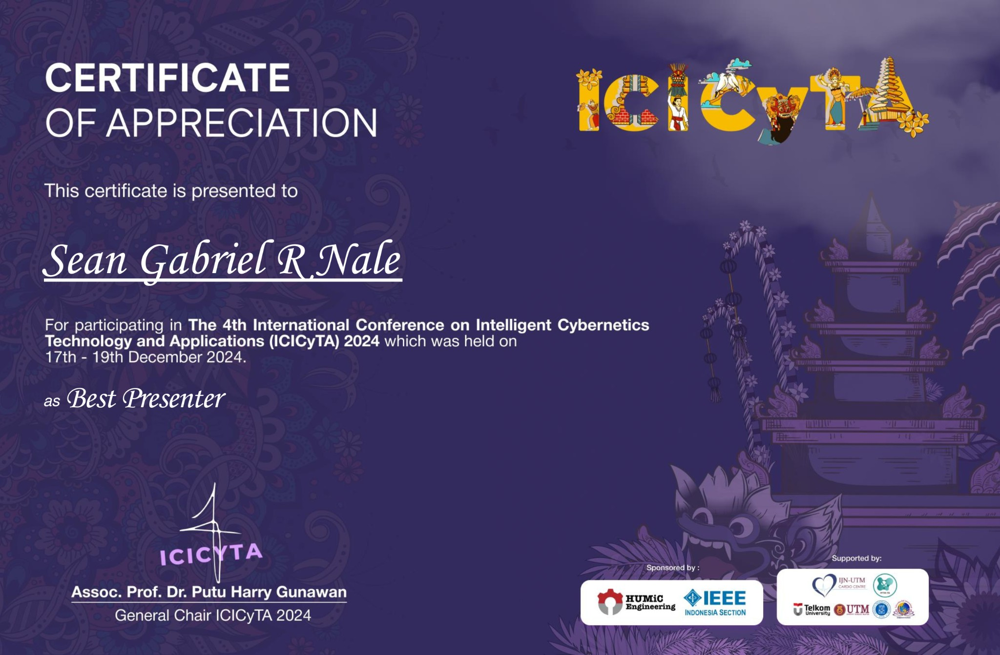
Best Presenter at ICICyTA 2024
The 4th International Conference on Intelligent Cybernetics Technology and Applications — Bali, Indonesia (Dec 17–19, 2024)
Web Development
I design and develop full-stack web applications with a focus on functionality, security, and user experience. My work includes client-based and institutional systems such as scholarship management platforms, alumni tracking systems, and data-driven dashboards.
I work across both front-end and back-end development, building responsive interfaces and reliable server-side logic while integrating databases and RESTful APIs. I prioritize clean code, maintainability, and real-world usability in every project.
- Programming Languages: Python, JavaScript, PHP, C, C++, C#
- Front-end Development: HTML5, CSS3, JavaScript, React.js, Bootstrap, jQuery, Chart.js, Leaflet.js
- Back-end Development: Node.js, Express.js, PHP, RESTful APIs, Apache, OpenAI API integration
- Databases: SQL, PostgreSQL, MySQL
- AI & Machine Learning: OCR, Logistic Regression, Convolutional Neural Networks (CNN), Google Vision AI, OpenAI API integration
- Frameworks & Libraries: React.js, Express.js
- Developer Tools & Platforms: Git & GitHub, Docker, Visual Studio Code, Postman, XAMPP
- Methodologies & Practices: Agile development, version control, responsive design, user-centered design
Recent Work

B-GIS: Barangay Geographical Information System
Awarded as Best Presenter at ICICyTA 2024
(Bali, Indonesia)


PLM Admission Management System
An Integrated Admission System for Four Major Admission Test
(Pamantasan ng Lungsod ng Maynila)
Integrated admission‑management system for Pamantasan ng Lungsod ng Maynila — registration, exam scheduling, scoring and reporting across multiple admission tests.
Role: Full‑stack developer. Tech: PHP, MySQL, responsive UI, OpenAI Integration, Machine Learning Algorithms (Combined CNN and Levenshtein).
Highlights: multi‑test workflows, secure candidate management and exportable results.


Charity First Foundation Inc.
A Client-Based System for a Charity Foundation Scholarship Grant
Scholarship‑grant management system for Charity First Foundation — applicant intake, eligibility screening, award tracking and reporting.
Role: Client project — frontend & backend. Tech: PHP, MySQL, Machine Learning Algorithms (Decision Tree and Logistic Regression).
Highlights: applicant workflows, award letters and donor/reporting exports.


Tracecrusade
An Alumni Tracking System for Sacred Heart of Jesus Catholic School
(A Freelance Project)
Alumni‑tracking and engagement system — graduate records, event management and contact discovery for Sacred Heart of Jesus Catholic School.
Role: Frontend & backend. Tech: PHP, MySQL, responsive UI.
Highlights: alumni search, event RSVP and exportable contact lists.


IT & Systems Support
- Desktop & laptop troubleshooting: physical cleaning, fan cleaning, thermal repasting, hardware diagnosis and upgrades (RAM, storage, battery).
- OS installation, migration & maintenance: Windows (multiple versions), macOS (basic troubleshooting), Linux (VMs for learning); data backup and drive-cloning for migrations.
- Software troubleshooting: application install/configuration, driver fixes, performance tuning and basic malware/antivirus checks.
- Virtualization & security testing: Linux virtualization environments; experimented with Wazuh for host/endpoint monitoring.
- Networking basics: network troubleshooting and connectivity diagnostics.
- Cisco Certifications: Introduction to Cybersecurity; Networking Basics.
- Soft skills: effective communication, problem-solving, adaptability, teamwork, time management.
Support Projects
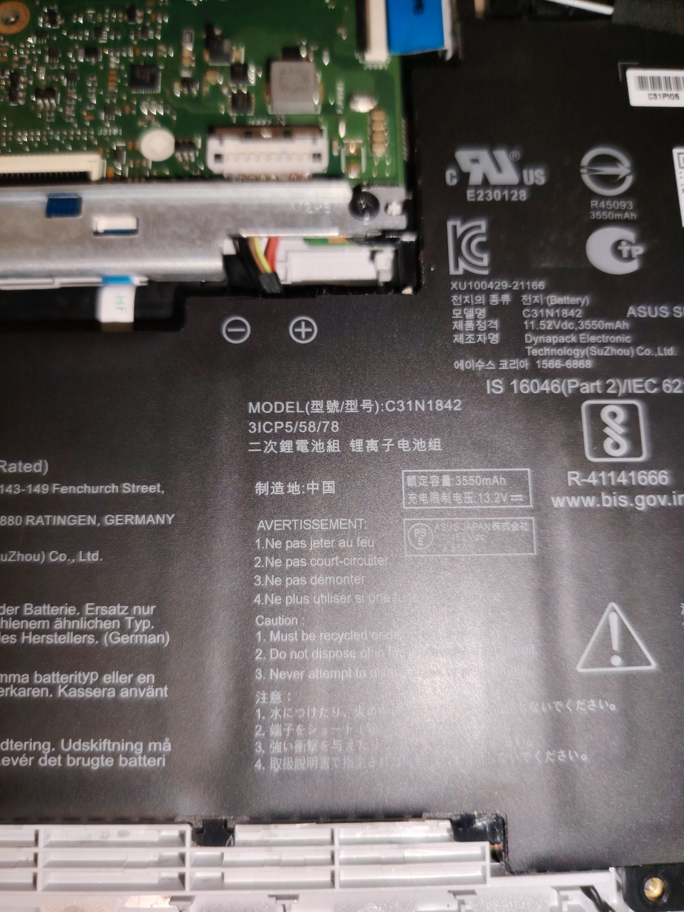
Battery Replacement & RAM Upgrade
Fast hardware refresh — battery replacement, RAM upgrade and post-upgrade diagnostics to restore performance and battery life.
Performed battery replacement, tested charging circuitry, upgraded RAM modules and verified system stability and battery reporting in OS.
Role: Hardware maintenance & diagnostics. Highlights: improved boot times, longer battery runtime.
 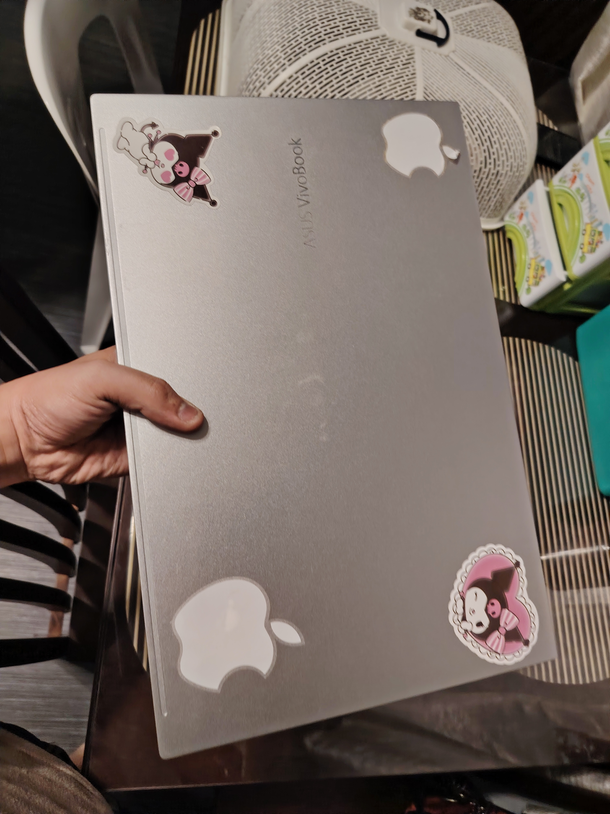
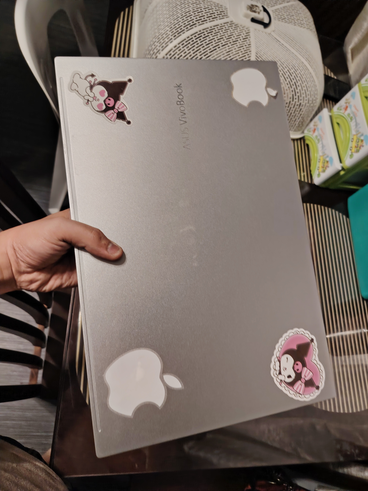
Laptop Deep Cleaning & Repasting
Full disassembly, fan & heatsink cleaning, fresh thermal paste and thermal validation to reduce temperatures and fan noise.
Complete internal cleaning and CPU/GPU thermal repaste followed by stress test and temperature logging to ensure thermal throttling was resolved.
Role: Thermal maintenance. Highlights: lower sustained CPU/GPU temps and reduced fan RPM/noise.
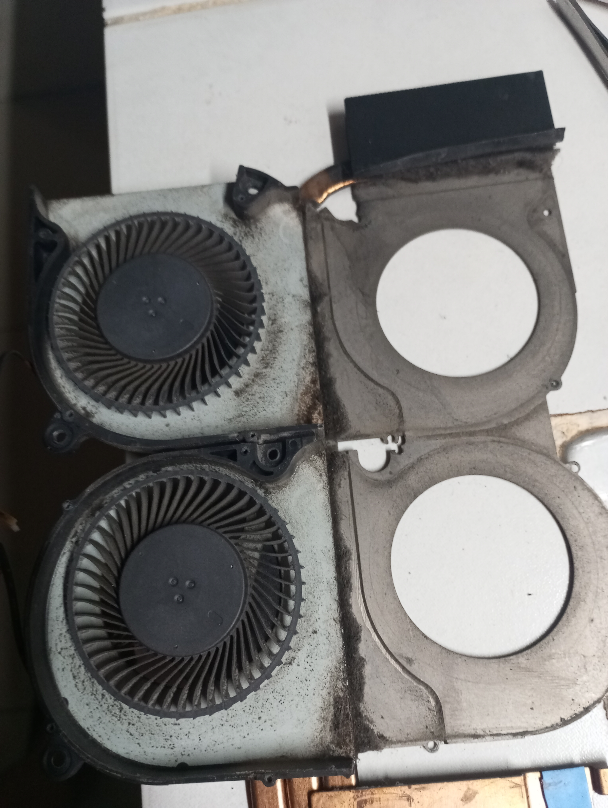
 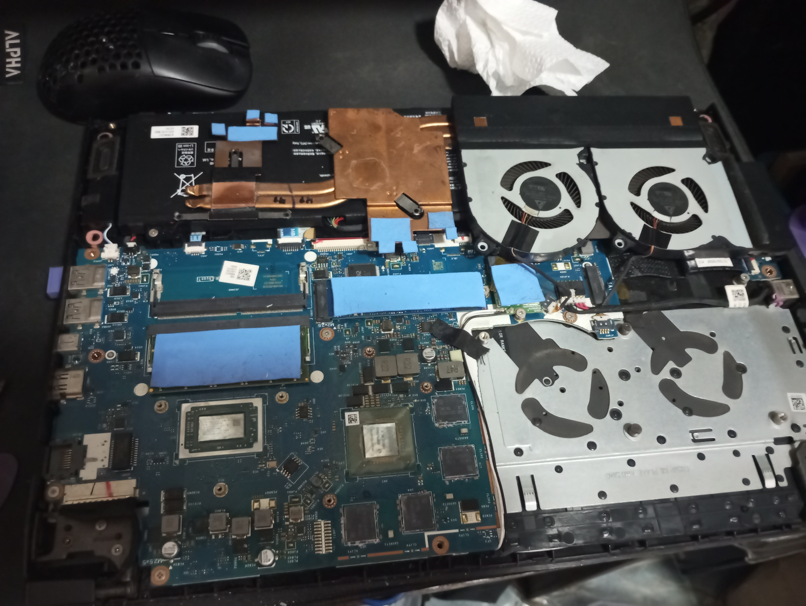
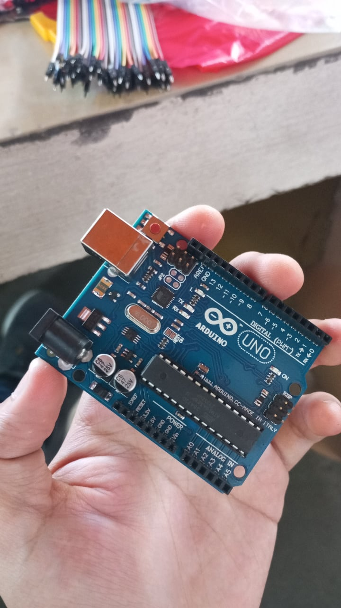
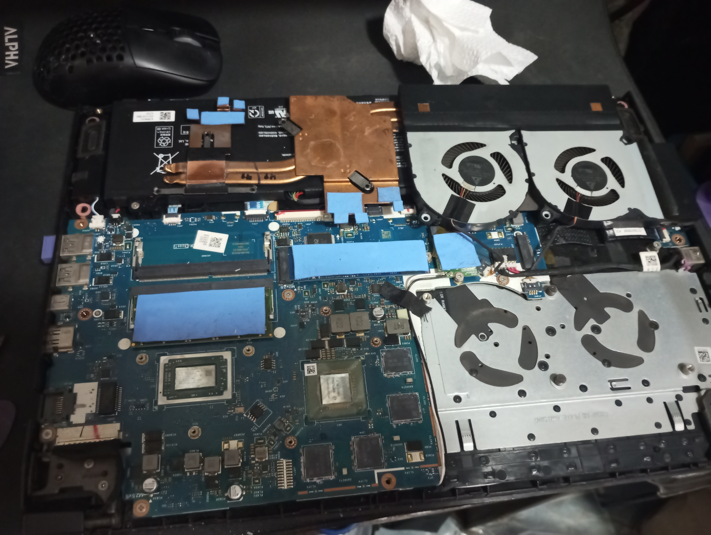
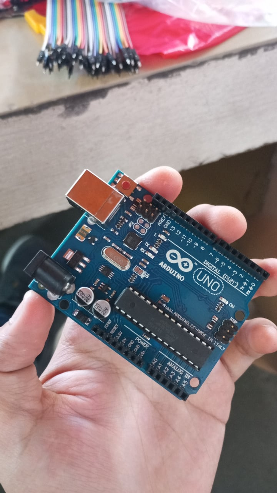
Sumo Bot
A small autonomous competition robot built with Arduino, motor driver and ultrasonic sensors for object detection and pushing.
Custom chassis, Arduino control, motor driver module, ultrasonic sensor for edge/object sensing and battery-powered drive system — tuned for torque and responsiveness.
Role: Design & implementation. Tech: Arduino, ultrasonic sensor, DC motors, motor driver, battery pack.
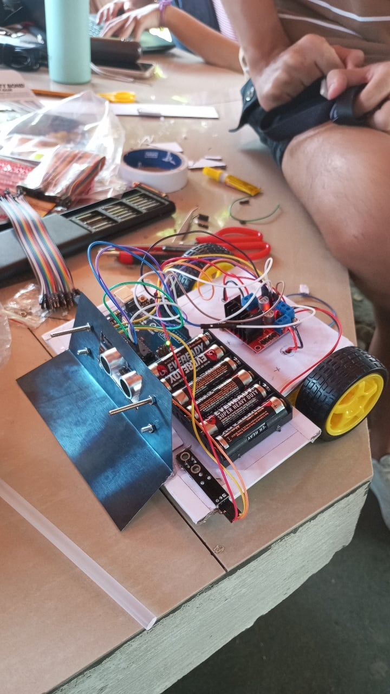
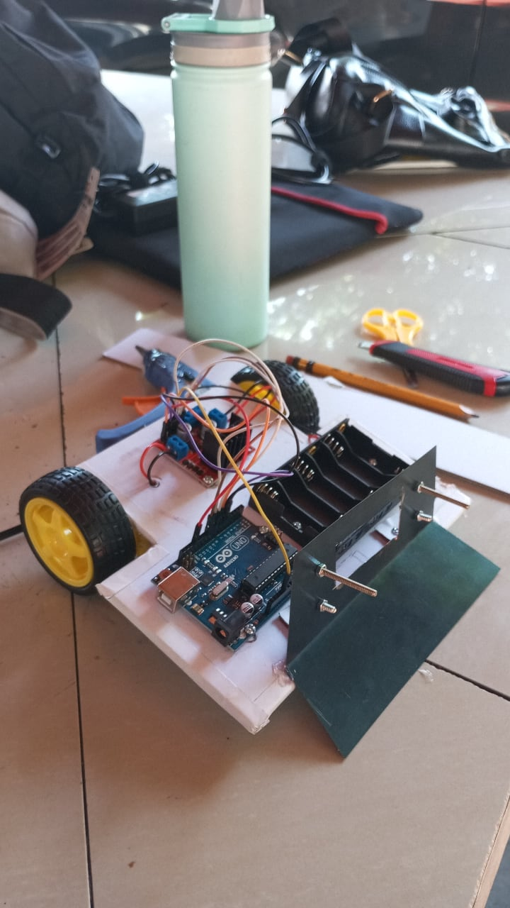

{kind=link}
{kind=link}
{kind=link}
{kind=link}
{kind=link}
{kind=link}
{kind=link}
{kind=link}
{kind=link}
{kind=link}